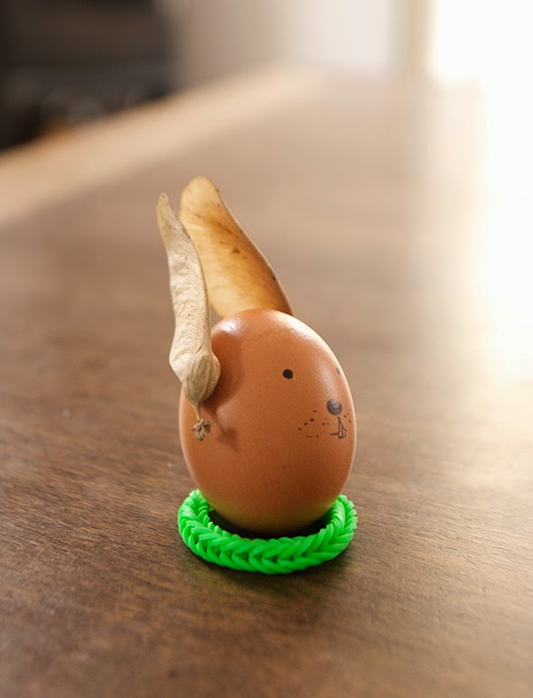
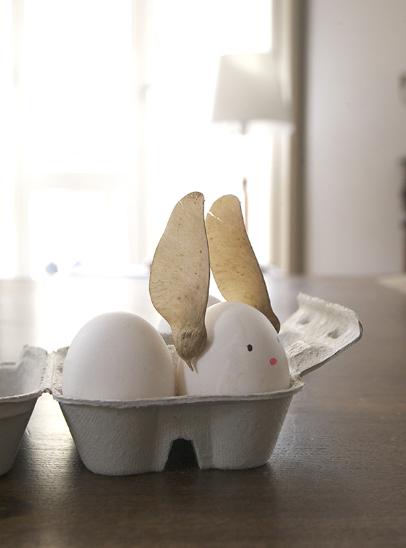
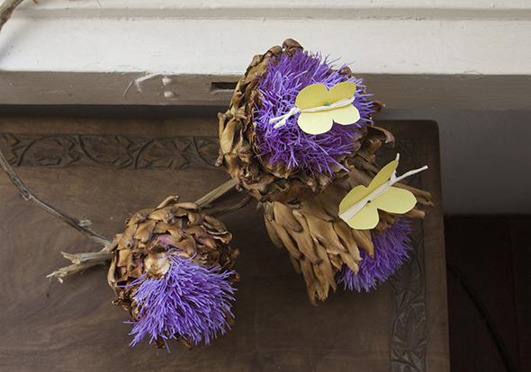
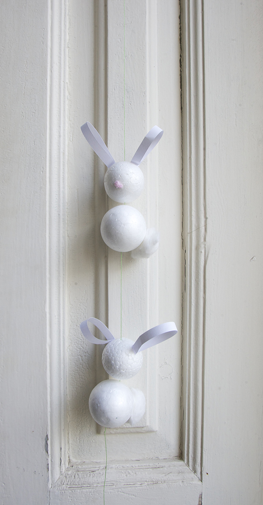
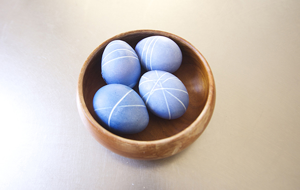

También te puede gustar

Ocasión
Pascua / Eastern / Ostern
Los niños pueden hacer con las velas de té eléctricos, su propia decoración de la luz. The kids can make their own light decoration craft by…
Leer más →

Ocasión
Mariposa / Butterfly / Schmetterling
Tienes que cortar una mariposa de un papel doblado (1), luego usas unas tiras de servilletas y lo giras entre las palmas de las manos hasta…
Leer más →
Ocasión
Guirnalda de Conejo / Rabbit guirnalda / Kaninchen Girnalde
Dos bolas de espuma de poliestireno, una tira de papel y un poco de algodón. Se pueden decorar mas. Two Styrofoam balls, a strip of paper…
Leer más →
Ocasión
Loom bands 02 / Loom rubber bands 02
Was kann man zu Ostern mit den Loom Bands machen? Wir haben sie um Eier gewickelt, bevor wir diese gefärbt haben. Danach einfach entfernen. Que se…
Leer más →